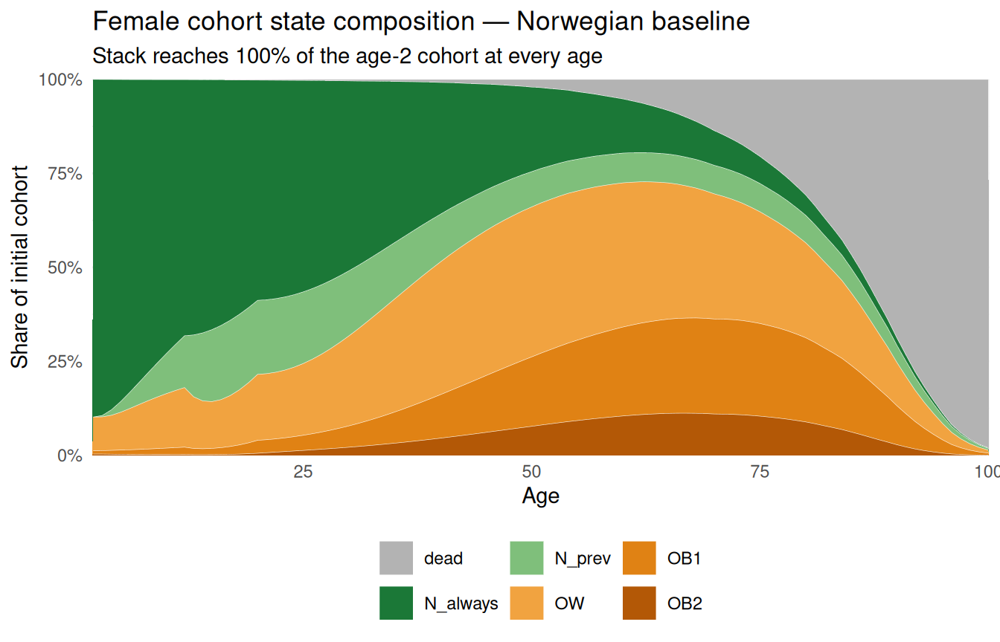

This is the entry-point tour of the moon package: how to run the published Norwegian model with the bundled inputs and inspect what comes back. Everything here uses defaults — no parameter editing.
If you want to modify the inputs (different costs, tighter mortality HRs, swap the life table, build your own PSA specs), see the companion vignette “Customizing MOON”.
1. The MOON model in one screen
MOON is a discrete-time Markov cohort model that simulates a Norwegian birth cohort from age 2 to ~age 100, in 1-year cycles. The state space is five live BMI bands plus an absorbing dead state:
N_always — always normal weight (BMI 18.5–25)
N_prev — currently normal weight but previously OW or OB
OW — overweight (BMI 25–30)
OB1 — obese grade 1 (BMI 30–35)
OB2 — obese grade 2+ (BMI ≥ 35)
dead — absorbing
Transition probabilities come from parametric survival analyses on Norwegian longitudinal cohorts; mortality is age- and BMI-specific (life table × hazard ratios from the Global BMI Mortality Collaboration); costs are per-capita 2009 EUR/year by age and state. The original model was implemented in Excel — see Bjørnelv et al. 2021, Medical Decision Making, doi:10.1177/0272989X20971589. This R port lifts every input into typed objects, adds an S3 layer over the run output, and exposes a clean PSA path through a parameter-spec system.
2. The public surface
The public API is deliberately compact:
Function
Purpose
moon_params_norway(sex, uncertainty)
Build the Norwegian-baseline parameter list (deterministic or PSA-ready).
List of 10
$ start_age : int 2
$ max_age : int 100
$ discount_rate : num 0.04
$ cost_currency : chr "EUR"
$ cohort_n : Named int 26458
..- attr(*, "names")= chr "female"
$ init_prev : Named num [1:4] 0.89828 0.08983 0.00861 0.00328
..- attr(*, "names")= chr [1:4] "NW" "OW" "OB1" "OB2"
$ qx : Named num [1:98] 0.000136 0.000067 0.000132 0.000163 0.000064 0.000031 0.000063 0.000032 0 0.000032 ...
..- attr(*, "names")= chr [1:98] "2" "3" "4" "5" ...
$ mortality_hr :'data.frame': 3 obs. of 4 variables:
$ transition_probs:'data.frame': 98 obs. of 7 variables:
$ cost_df :'data.frame': 396 obs. of 3 variables:
Slot anatomy:
Slot
Type
What it carries
start_age, max_age
int
model horizon (2 → 100)
discount_rate
num
0.04 by default
cost_currency
chr
“EUR”
cohort_n
named int
cohort size, key = sex label
init_prev
named num
NW/OW/OB1/OB2 mass at start_age
qx
named num
NW baseline yearly mortality, ages 2–100
mortality_hr
data.frame
HRs vs NW for OW/OB1/OB2 by age band
transition_probs
data.frame
yearly between-state transitions, ages 2–99
cost_df
data.frame
per-capita yearly cost by age × state
cohort_n is a named integer (c(female = 26458L)) so the sex label is recoverable from the params alone — useful when you stitch results from multiple sexes together.
Setting uncertainty = TRUE returns the same shape but with the uncertain slots wrapped as moon_param_* spec objects, ready for PSA. We come back to that in §11.
moon_check_params() is silent on success and errors loudly on problems: shape mismatches, off-simplex init_prev, transition probabilities outside [0, 1], age misalignment between transition_probs and start_age/max_age, etc. Three phases run in order — structural, range, then cross-object consistency — and any problems found are reported in one batch.
It runs implicitly inside moon_deterministic() (with strict = TRUE). Calling it standalone is useful when you’ve mutated params and want to fail fast before kicking off a full run; pass strict = FALSE to downgrade the error to a warning while iterating.
A moon_deterministic is a list with four named slots:
$trace — long data frame (age, sex, state, n). Six states including dead and the engine’s full N_always / N_prev split. n is a head-count denominated by params$cohort_n.
$costs — long data frame (age, sex, state, cost, cost_disc), five live states. cost is total euros that age-state cell incurred; cost_disc applies params$discount_rate. dead is excluded.
$params — the input list, stored verbatim. Useful for auditing and re-running.
plot.moon_deterministic() takes a type = argument with five options. All return ggplot objects, so + theme_*() and ggsave() work without reaching inside.
Each state as a fraction of the initial cohort. Lines no longer sum to 1 because dead siphons mass over time — useful when you want survivor-adjusted prevalences directly.
age sex state cost cost_disc
1 2 female N_always 0 0
2 3 female N_always 0 0
3 4 female N_always 0 0
Identical to res_F$trace / res_F$costs but reads more idiomatically in pipelines.
7. Long-form extractors
The S3 plots cover the headlines; most real analyses want raw long-form data. There are two public extractors plus the underlying $trace / $costs frames.
moon_costs() aggregates $costs over a single dimension chosen via by = ("total" returns a scalar; "age", "state", or "sex" return a long data frame). Restrict ages with ages =, switch to discounted euros with discounted = TRUE.
moon_costs(res_F, by ="age", discounted =TRUE, ages =c(20, 50, 80))
age cost
1 20 11961118
2 50 6709896
3 80 2497884
8. Building your own plot
A worked example: take the full cohort decomposition out of moon_prevalence() and turn it into a stacked-area plot — every state on one axis, summing to 100% of the initial cohort at every age.
state_mix<-moon_prevalence(res_F, denominator ="initial")state_mix$state<-factor(state_mix$state, levels =c("dead", "N_always", "N_prev", "OW", "OB1", "OB2"))state_palette<-c( dead ="grey70", N_always ="#1b7837", N_prev ="#7fbf7b", OW ="#f1a340", OB1 ="#e08214", OB2 ="#b35806")ggplot(state_mix, aes(x =age, y =prevalence, fill =state))+geom_area(position ="stack", colour ="white", linewidth =0.1)+scale_y_continuous( labels =scales::percent_format(accuracy =1), expand =c(0, 0))+scale_x_continuous(expand =c(0, 0))+scale_fill_manual(values =state_palette)+labs( x ="Age", y ="Share of initial cohort", fill =NULL, title ="Female cohort state composition — Norwegian baseline", subtitle ="Stack reaches 100% of the age-2 cohort at every age")+theme_minimal()+theme(legend.position ="bottom")

You are never locked into the canned plots. The extractors and $trace / $costs frames give you raw long data; everything else is whatever your downstream code does best.
9. Comparing sexes
moon_params_norway() is single-sex per call. Run all three strata and stitch the headline numbers into one table:
res_M<-moon_deterministic(moon_params_norway("male"))res_both<-moon_deterministic(moon_params_norway("both"))inc_cost_per_capita<-function(result){m<-merge(result$trace,result$costs, by =c("age", "sex", "state"), all.x =TRUE)m$c<-ifelse(m$n>0&!is.na(m$cost), m$cost/m$n, 0)c_NW<-m$c[m$state=="N_always"]names(c_NW)<-m$age[m$state=="N_always"]m$c_NW<-c_NW[as.character(m$age)]obese<-m$state%in%c("OW", "OB1", "OB2")sum(m$n[obese]*(m$c[obese]-m$c_NW[obese]))/unname(result$params$cohort_n)}data.frame( sex =c("female", "male", "both"), inc_cost_eur =round(c(inc_cost_per_capita(res_F),inc_cost_per_capita(res_M),inc_cost_per_capita(res_both))))
sex inc_cost_eur
1 female 16105
2 male 4092
3 both 9604
These are lifetime cumulative incremental costs per cohort member, relative to an all-NW counterfactual.
10. Built-in scenarios via tp_overrides=
Every paper scenario can be run by passing a one-shot tp_overrides list to moon_deterministic(). Three slots are recognised:
set_zero — character vector of transition columns to zero out (e.g. "OW_OB1", which closes the only path into the obesity ladder).
init_prev — replace the params’ initial state vector for this run.
start_age — start the cohort later than params$start_age (used by paper scenarios SA3-6, which start everyone at age 30).
The example below reproduces paper scenario SA2 (eliminate OB1+OB2 by closing OW→OB1 and re-allocating any starting OB1+OB2 mass to OW):
YLL_female is the per-person years-of-life lost attributable to obesity in this cohort — the gap between the obesity-eliminated counterfactual and the baseline run.
tp_overrides= is a one-shot flag passed at the call site; the params object is untouched. If you instead want a permanent change (“this is my new baseline”), edit params directly — see the “Customizing MOON” vignette.
11. PSA on the Norwegian baseline
PSA uses the same loader, just with uncertainty = TRUE. The slots the paper treats as random become moon_param_* spec objects; everything else stays plain.
mortality_hr$OW (and $OB1, $OB2) is a list-column of moon_param_lognormal specs, one per age band.
cost_df$cost is a list-column of moon_param_gamma specs, one per (age, state) cell. Ages 2–19 have mean = se = 0 (degenerate gammas that always sample 0).
transition_probs becomes list(specs, bands) — specs holds 18 moon_param_mvnorm objects (one per transition × age band).
init_prev, qx, scalars, and cohort_n stay as plain values: the paper does not treat these as uncertain.
Per-age incremental cost vs NW with mean and 2.5–97.5% bands across iterations. Requires store_traces = "all".
11.3 Custom credible intervals from $per_iter
Same “you’re not locked in” message as §8 — $per_iter is a long data frame with one row per (iter × metric × sex), so any quantile-based summary is one base-R call.
seed — sets the random seed before sampling. Same seed + same spec ⇒ bit-identical PSA results.
correlate_hr / correlate_cost — toggle the legacy single-Z / single-U shared-randomness behaviour. Default TRUE matches what the paper authors ran. Set FALSE for independent draws per spec.
parallel = TRUE — opt into furrr (if installed). Iterations parallelise trivially; skipped here so the demo renders deterministically.
store_traces — set to "summary" or "none" for big runs; the saved object can otherwise grow to hundreds of MB at 1000 iterations.
12. PSA on a built-in scenario
Pass tp_overrides= to moon_psa() and the override is applied to every iteration. This gives you a credible interval on a scenario quantity — for SA2 (eliminate OB1+OB2), the YLL distribution.
[1] "Female YLL from eliminating OB1+OB2: 1.33 y [1.07, 1.62]"
Same seed for both runs ⇒ paired draws ⇒ the YLL distribution is the within-iteration difference, not a difference of independent samples — which is what you want for a credible interval on the incremental quantity.
13. Where to go next
“Customizing MOON” — companion vignette covering how to alter any input (deterministic and PSA), swap in your own datasets, and build PSA specs from scratch.